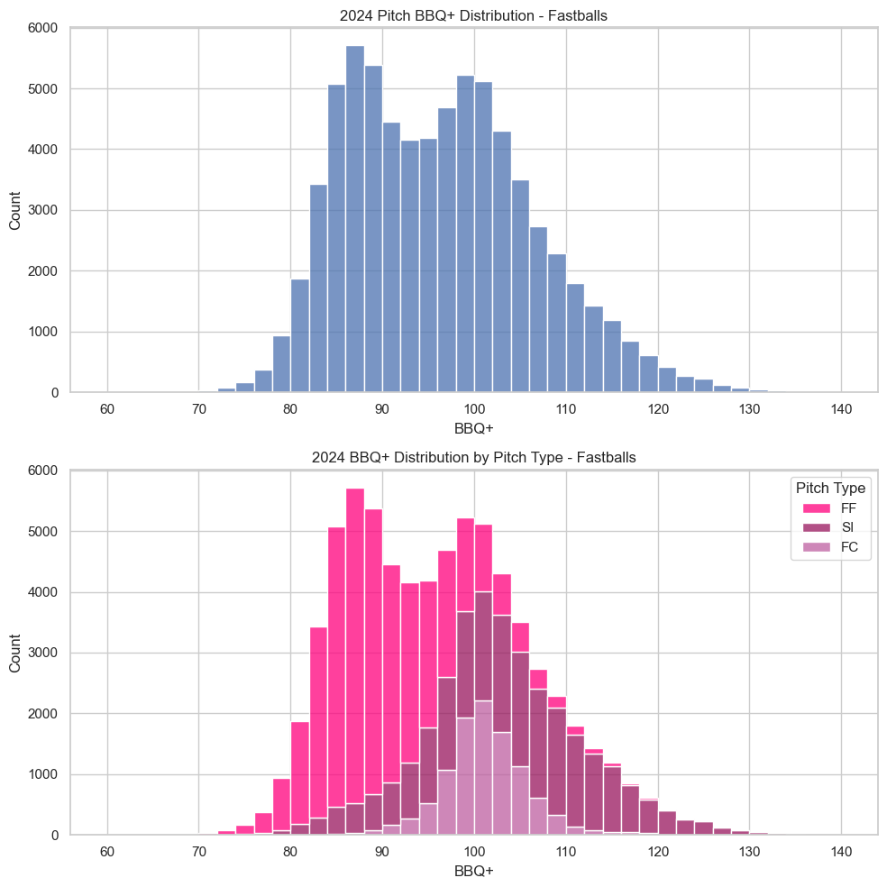

Beyond Whiffs: Rethinking Pitch Value with BBQ+
By Chris Song | May 22, 2025
In today’s era of advanced baseball analytics, traditional statistics are no longer enough to capture the intricate nuances of pitching performance. The plethora of tracking technology and data available to teams, players, and fans alike have significantly deepened the level of detail and precision with which pitchers can be evaluated.
Specifically, analysts Max Bay and Eno Sarris at FanGraphs have used the physical characteristics of pitches thrown to better understand the quality and value of each individual pitch through a model known as Stuff+. This type of pitching model, which has several different variants, provides general approximations of how “nasty” a pitch is, independent of the results they achieve. By isolating physical traits, these metrics paint a more accurate and complete picture of a pitcher’s arsenal, and thus provide a baseline for analysis as it pertains to pitch usage, pitch improvements, and the overall value of a pitcher.
A New Approach to Stuff Evaluation
Many of these models are centered around modeling a pitch’s ability to limit opponent run value, a Statcast metric that quantifies the impact of a specific event (like a strike, ball, or batted ball) on the change in run expectancy, or the expected amount of runs scored. There are generally two ways a pitch can decrease the run expectancy of the batting team: by inducing a strike or creating an out via a batted ball. A batted ball presents a trickier case than inducing a strike. It is understood that there are several batted ball outcomes, such as a groundout or a flyout, that can reduce run expectancy. Usually, hard hit balls hit between a 0 to 40 degree launch angle tend to create the majority of batted ball damage. However, there does not exist a set fine line between a pop fly, a blooper hit in the gap between the infield and the outfield, and a lineout to the outfielder. There are mere fractions of inches of difference in the swing of a bat between it becoming a double in the gap and a pop fly to the shortstop. So, where does the pitcher play a role in limiting the batted ball outcomes of a pitch?
For decades, analysts relied on the theory of Defense Independent Pitching Statistics (DIPS), which posits that pitchers have minimal control over outcomes once a ball is put in play. Pioneered by Voros McCracken in the early 2000s, DIPS-inspired metrics like FIP (Fielding Independent Pitching) and xFIP (expected Fielding Independent Pitching) ignore batted-ball results entirely, focusing instead on strikeouts, walks, and home runs—events fully within a pitcher’s control. This approach acknowledged that batters and defenses, not pitchers, primarily dictate whether a batted ball becomes a groundout or a double. However, advancements in tracking technology (e.g., Statcast’s Hawkeye system) have revealed that pitchers do influence batted-ball quality through pitch characteristics like spin, movement, and release point.
BBQ+, or Batted Ball Quality Plus, seeks to expand the DIPS framework by isolating how a pitch’s physical traits predict its ability to limit damage. The central question driving this study asks: To what extent do the physical properties of pitches affect their ability to limit batted ball quality? By quantifying the relationship between “stuff” and contact suppression, BBQ+ bridges the gap between DIPS’s defense-agnostic philosophy and the nuanced reality of modern pitching, proposing that pitchers who excel in certain areas can inherently limit their opponent's batted ball quality in a consistent, sustainable manner.
Methodology: From Data to Decision-Making
In developing our model, we start with wOBA (Weighted On-Base Average), a metric that assigns each method of reaching base a value proportional to its run-scoring potential, offering a more nuanced measure of offensive production than traditional stats.
Building on this, xwOBA (expected wOBA) leverages batted ball data—specifically exit velocity and launch angle—to predict the likely outcomes of each contact independent of defensive factors. To recreate xwOBA, which is not a publicly available algorithm, a K-Nearest Neighbours (KNN) algorithm is used to classify batted ball events by predicting total bases, which are then weighted by their corresponding run values.
To visualize the relationship between contact quality and offensive production, the two complementary heatmaps that illustrate how exit velocity and launch angle influence outcomes. The Total Bases KDE plot on the left shows the density of batted balls leading to 0 through 4 bases, revealing that most damage occurs within a narrow window: exit velocities above 95 MPH and launch angles between 20–35°, where the red region marks home runs and extra-base hits. This aligns closely with the Expected wOBA heatmap, where the same region corresponds to the highest expected run values. Both plots reinforce the premise of BBQ+: pitches that avoid inducing contact in this red-hot zone are far more effective at limiting damage. By training models on these distributions, it is possible to quantify how well a pitch suppresses quality contact, bridging the gap between traditional DIPS models and modern batted-ball-based evaluation.
Building on the xwOBACON framework, a LGBMRegressor model provides a granular grade for each pitch on a standardized scale—with a mean of 100 and a variance of 10—capturing its ability to limit high-quality batted ball outcomes. To achieve this, the model incorporates a suite of key features extracted from Statcast data:
- Velocity (start_speed): The speed of the pitch in miles per hour, which directly influences the batter’s reaction time and the overall effectiveness of the pitch.
- Vertical Break (ax): This measures the degree of upward or downward movement of the pitch. A pitch with a pronounced vertical break can force batters into less optimal swing paths, reducing the quality of contact.
- Horizontal Break (ax): The lateral movement of the pitch that can disrupt a batter’s timing and positioning by shifting the pitch’s location away from the expected target.
- Release Height (z0): The vertical point at which the pitch is delivered. Variations in release height can alter the perceived trajectory and make the pitch more deceptive.
- Arm Angle/Release Point (extension, x0, z0): The angle and position from which the pitch is thrown. An unconventional or outlier release point can contribute to the pitch’s overall effectiveness by adding an element of deception.
- (Optional) Spin Rate: While not always included, spin rate affects both the vertical and horizontal movement, further refining the pitch’s behavior in the air.
The bar chart below illustrates the relative importance of each feature used in the BBQ+ model when predicting a pitch’s ability to suppress batted ball quality. In the context of gradient boosting (specifically LGBMRegressor), feature importance is measured by how much each variable reduces model error across all decision tree splits. Variables like ax (horizontal break), az (vertical break), x0 (release side), and z0 (release height) emerge as the most influential, indicating that movement and release position are key determinants of poor contact. Other important variables include start_speed, the velocity of the pitch, extension, which is a byproduct of measuring the release point and influences how quickly the ball reaches the plate, and spin_rate, which reflects a pitcher’s ability to spin the ball—spin being the physical mechanism that generates acceleration and directional movement such as rise or break.
Several of these features, such as ax_diff, az_diff, and speed_diff, were created through domain-informed feature engineering that compares each pitch to the pitcher's own fastball baseline. For instance, speed_diff measures how much slower a pitch is than the pitcher's average fastball, while ax_diff quantifies deviations in horizontal movement—both critical for deception. Together, these features help the model capture nuanced relationships between pitch shape and batted ball outcomes. The high importance of these derived features validates their role in identifying pitches that consistently avoid dangerous contact zones.
Visual Insights and Statistical Leaders
The most notable trend is the 4-Seam Fastball significantly lagging behind any other pitch type, which is unsurprising as it gets hit the hardest and allows the most damage of any pitch type. Good 4-seam fastballs derive most of their value from getting whiffs and foul balls, but a lot of this benefit is often offset by hard contact, which is why 4-seam usage has continually decreased in recent years.
In contrast to the 4-seam, the sinker and cutter perform considerably better on average, as their subtle movements help them avoid barrels and induce softer contact on average.
Breaking balls and offspeed pitches generally do not get strike calls at a high rate, resulting in most of their value coming from generating whiffs and softer contact, as shown by their general above average performance in limiting batted ball quality.
The best performing pitchers can be generally categorized into three key characteristics, with some overlapping within multiple categories.
Sinkerballers
Sinkers kill vertical break (the vertical movement of a pitch from its expected trajectory) while increasing horizontal break (the horizontal movement of a pitch from expected trajectory), which induces a lot of weak contact underneath the sweet spot of the bat. This creates high groundball rates and thus limits the batted ball quality. Notably, Sinkers have the best BBQ+ value among all fastballs (Four-Seam - FF, Cutter - FC, Two-Seam/Sinker - SI).
Arm Angle Unicorns
These pitchers are mostly sinkerballers, but they also utilize their low, unique arm angles to create deception and soft contact. Most hitters are not used to the balls “sinking”, or losing vertical break as a fastball, as much as these pitches do, resulting in swings that generate high groundball rates and soft contact.
- Pictured, clockwise from the top left:
- Tyler Rogers (SFG) - Submarine (underhand) pitcher who throws a sinker-slider with unicorn pitch shapes.
- Ryan Thompson (ARI) - Sidearm pitcher with a unicorn sinker and rising slider at a -6 degree arm angle.
- Justin Lawrence (PIT, pictured in COL) - Similar sinker as Thompson with a similarly low arm angle, but with a sweeper that breaks even more horizontally.
- Tim Hill (NYY) - Left-handed sidearm pitcher with league-leading groundball rates and exit velocity suppression.

SplitterBallers
Splitters are an intriguing case within the BBQ+ framework. Although traditionally classified as offspeed pitches, splitters distinguish themselves from changeups and curveballs through both their velocity profile and movement characteristics. Unlike typical offspeed pitches that rely primarily on reduced speed and vertical drop, the splitter operates deceptively close to a fastball in speed but with a dramatic collapse in vertical break, often registering as negative induced vertical break. In simpler terms, the ball appears to “fall off the table” just before reaching the hitter, leading to frequent swings over the top.
This unique movement profile arises from the splitter’s grip, which reduces spin efficiency. While four-seam fastballs (MLB Average: ~2300 RPM) and even some sinkers (MLB Average: ~2150 RPM) generate backspin to resist gravity and create “ride,” splitters are intentionally thrown with reduced spin rate (MLB Average: ~1300 RPM) and low spin efficiency, minimizing lift and allowing gravity to take over. This creates a downward plunge effect, especially effective when the pitch tunnels off a fastball.
From a batted ball quality perspective, this means splitters are highly effective at producing low launch angles and reduced exit velocities. The pitch avoids barrels not through horizontal deception but through vertical misalignment with the batter’s expected swing path. Many splitters also land below the strike zone, yet still induce swings due to their fastball-like initial trajectory. Within the BBQ+ model, this contributes to strong contact suppression scores even in the absence of elite whiff or strikeout rates.
While splitters are still relatively rare in modern pitch arsenals—partly due to mechanical strain and difficulty commanding the pitch—they consistently emerge in BBQ+ as elite performers when well-executed. Their success is grounded in two intertwined advantages: (1) they closely mimic fastballs in speed and release point, and (2) they sharply diverge in vertical movement at the last instant. These qualities lead to mis-hits, weak contact, and high ground ball rates, making them invaluable for pitchers who can command them reliably, such as Yoshinobu Yamamoto, who has allowed just 1 fly ball this season on his splitter.
In BBQ+, splitters offer a powerful case study in the value of vertical deception. Though they don’t often generate called strikes or high whiff rates like breaking balls, their ability to suppress quality contact—especially when used in conjunction with elevated fastballs—provides a unique strategic edge in limiting offensive production.
Conclusion: Rethinking Pitch Value in the Contact Era
In an era increasingly defined by whiffs and high strikeouts, BBQ+ offers a critical lens into the underappreciated aspects of modern pitching. By isolating the physical traits that consistently limit batted ball quality—such as vertical and horizontal movement, release angle, and velocity—this metric reorients the conversation around what makes a pitch truly effective. While traditional evaluations may lean heavily on strikeouts or ERA, BBQ+ brings the focus back to what happens after the ball is hit, challenging long-held assumptions born out of thinking around DIPS.
The data reveals that pitch types historically viewed as less glamorous—like sinkers and splitters—have gained newfound relevance in today’s analytical landscape. Pitchers who kill vertical break, generate unique horizontal profiles, or operate from unconventional arm slots have emerged as the sport’s most efficient suppressors of quality contact. As the more advanced front offices and coaching staffs continue to leverage granular pitch-level data to optimize performance, metrics like BBQ+ will become increasingly central to the evaluation and development of pitching talent. In a game where inches often separate doubles from outs, that edge can make all the difference.